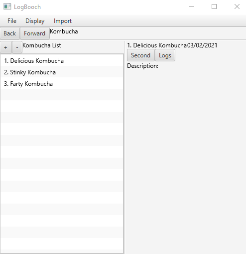

| HOME | PAST | FUTURE | COMMENTS |
For my future, I have three potential outcomes that will ultimately make me a happy man (I hope). These future career paths will involve a lot of hard work and dedication to achieve but I believe in my abilities to achieve this goal.
I have really enjoyed all programming related subjects from this course so far, i.e. Programming 1, Database Fundamentals, and Applications Programming. I hope to take the skills I gain from this course in Java, Python, and any other programming language to a professional level and make an impact in the software development industry.
For a more near future goal, once I finish developing v1.0 of my kombucha logbook tracking GUI application (LogBooch I've called it), I plan on posting and sharing it amongst several kombucha brewing communities on Reddit, FaceBook, and any other social media platform and hopefully gain a following. From this I'm hoping to achieve some form of professional development with feedback from active users and the corresponding maintenance that comes along with that. This is currently what I'm rocking with for the GUI (Still learning FXML and FXML CSS... weird stuff, like a website for GUIs. Also all text is just placeholder information):
Doesn't look like much right now, however there is a lot of OOP and over 1000 lines of code backing this bad boy up. There are also several JSON files connected to one of the classes in my OOP approach that I intend on expanding into a proper SQL database using PostgreSQL or some similar DBMS in the future.